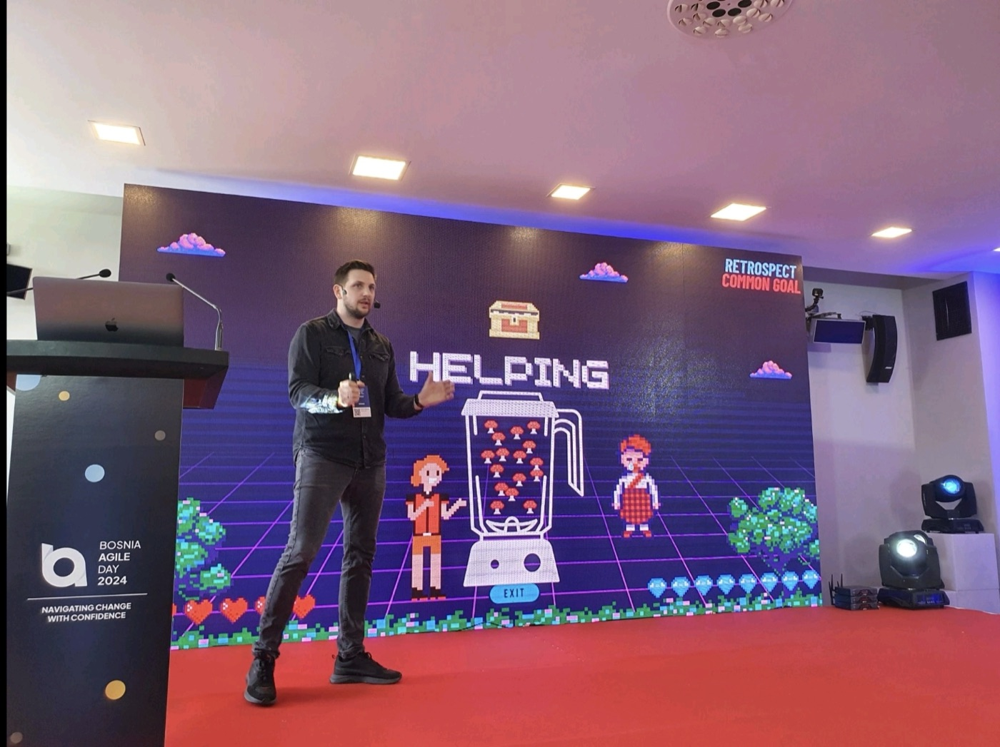
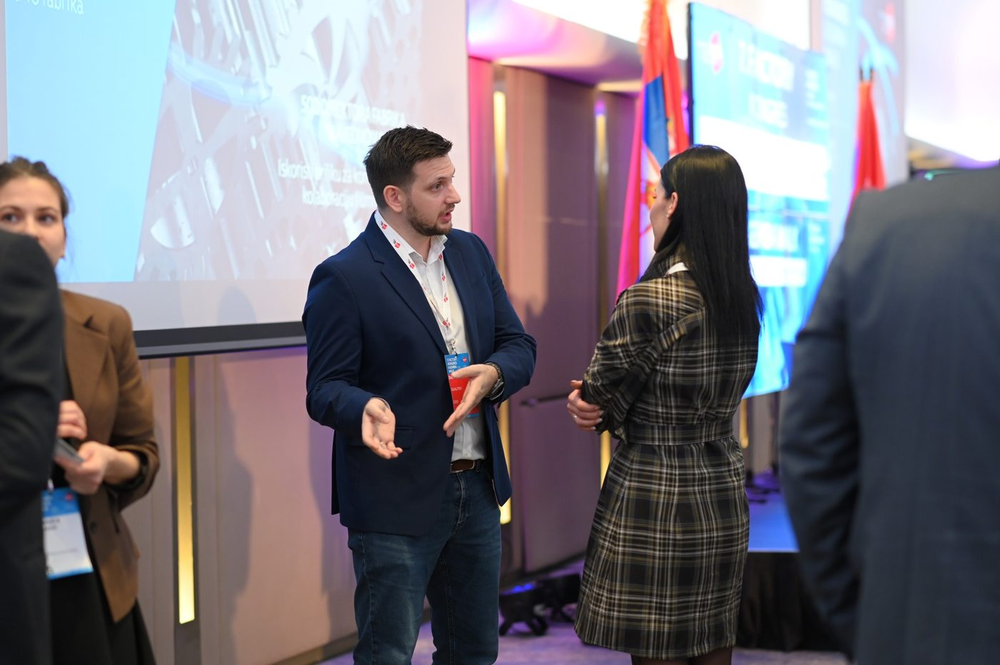
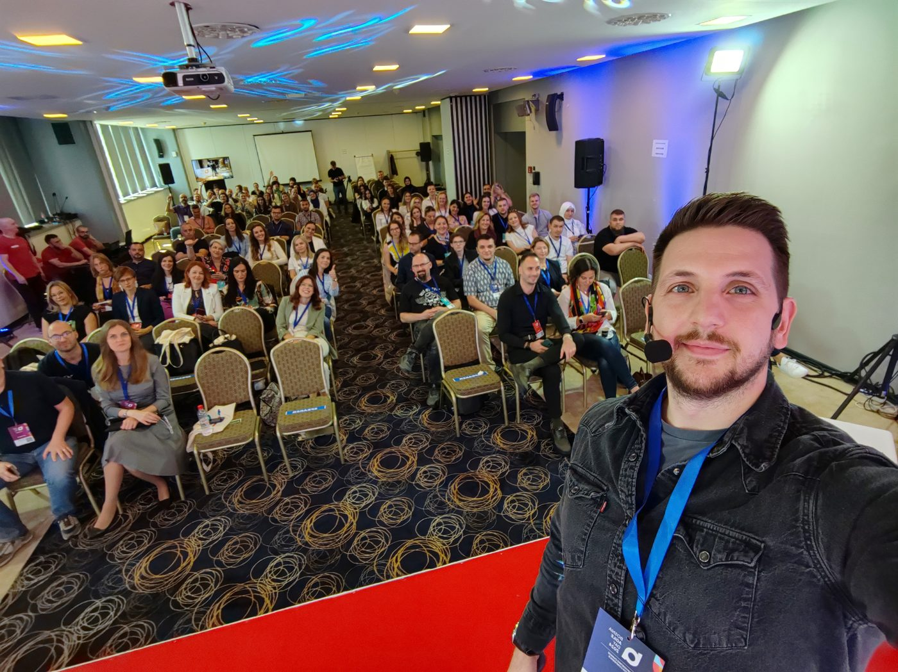
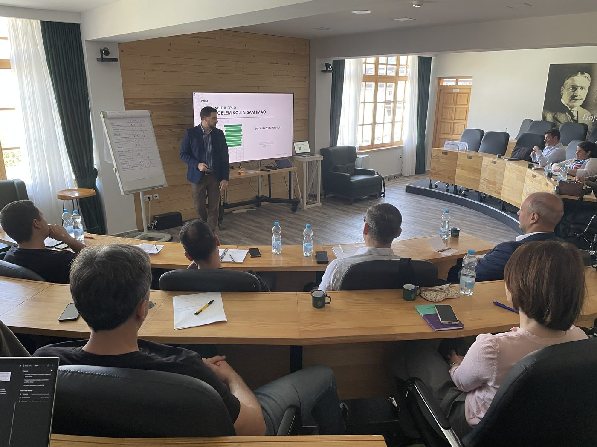

Moje usko grlo bio sam ja.
Ja sam Stefan Stojković. Pomažem vlasnicima agencija i digitalnih uslužnih biznisa da prime više klijenata bez proporcionalnog povećanja tima. Ovo mi nije teorija iz knjige. Prvo sam to morao da uradim u sopstvenoj firmi.

Toliko je trajala isporuka jedne moje radionice.
Klijent pošalje zahtev, mi zakažemo termin, odradimo radionicu, ja napišem izveštaj, klijent ga dobije. Od prvog zahteva do izveštaja prolazio je 31 dan.
Kad sam prvi put nacrtao taj tok na papiru, kao što ga crtam klijentima, video sam nešto što mi se nije dopalo. Pisanje izveštaja je trajalo 10 dana. I izveštaj sam mogao da napišem i pregledam samo ja.
Moja firma je mogla da isporuči dve i po radionice mesečno. Ne zato što nije bilo klijenata, nego zato što je sve čekalo mene.
Više rada tu ne pomaže. Problem nije bio u tome koliko radim, nego u tome što je ceo tok stajao na jednom čoveku.
Onda sam uradio ono što radim sa klijentima. Uveo sam čekliste i šablone, pa je sama radionica sa dva dana pala na jedan. Napravio sam šablon izveštaja i proveru po tom šablonu uz pomoć AI-ja, pa je pisanje palo sa 10 na 5 dana. Obučio sam još jednu osobu za pregled. Forma na sajtu sada sama proverava da li je klijent za nas, a podsetnici za termine i molbe za povratnu informaciju idu automatski.
Izvršenje je palo sa 12 na 6 dana. Kapacitet je skočio sa dve i po na pet radionica mesečno.
Isti ja. Isti dan od 24 sata. Duplo više isporuke. Jer sam prestao da budem jedini put kroz koji posao mora da prođe.
Ovo je razlog zašto svaka saradnja sa mnom počinje mapom. Dok ne vidiš gde posao čeka, svaka odluka je pogađanje: novi čovek, novi alat, više rada.
Ceo radni vek rešavam probleme u timovima koji isporučuju

Znanje bez sprovođenja nije sistem.
Godinama sam pored posla držao radionice vlasnicima i liderima. Ljudi dođu, dobiju znanje, odu kući i za šest nedelja sve stoji.
Zato Futurist Systems ne ostavlja dokument. Ostajemo dok sistem ne zaradi ono što je obećao: vreme vlasniku, veću maržu, zadovoljnije klijente i ljude koji rade u firmi.
Od agencije od pet ljudi do liderskih timova velikih firmi
Trener Mokrogorske poslovne škole
Kao spoljni facilitator i trener radim sa senior timovima kompanija koje biraju Mokrogorsku školu, i u trogodišnjem liderskom programu „Bolji biznis”, gde su me učesnici ocenili sa 9,6/10. Na treninzima 2025. i 2026. prosečna ocena predavača mi je 4,8 od 5.
Licencirani Lean Change trener
Licenciran sam da predajem pristup vođenju promene u kome se promena gradi zajedno sa ljudima, kroz male korake i proveru, a ne kroz plan koji se spusti odozgo.
Radio sam sa liderskim timom američke proizvodne kompanije, sa 15 direktora sektora banke iz Crne Gore, sa upravom i srednjim menadžmentom gaming studija iz Beograda, sa timovima osiguravajuće kuće i državne energetske kompanije. I sa agencijama od tri do petnaest ljudi, gde se svaka promena oseti već prvog meseca.
„Drugačiji ugao gledanja može da doprinese efikasnosti i posvećenosti. Sve u svemu, odličan i zanimljiv trening.”

„Lako razumljivo. Uvek otvoren za povratne informacije, i trudio se da izađe u susret potrebama svakog učesnika.”

„Dobro objašnjeno, informativno, baš ono što mi je trebalo. Ništa ne bih menjao, već je savršeno.”

Tri stvari u koje verujem
Prvo mapa, pa alat
Alat koji uđe u haos ubrza haos. Krećem od toga kako posao stvarno teče, pa tek onda biramo šta automatizujemo.
Jedno usko grlo u isto vreme
Firma koja popravlja deset stvari ne popravi nijednu. Biramo ono što drži sve ostalo i ostajemo na tome dok se ne pomeri.
Promena mora da izdrži ponedeljak
Plan koji radi samo na radionici nije plan. Ostajem dok sistem ne počne da radi u svakodnevnom poslu, sa tvojim ljudima.
- Suosnivač sam OdvaŽ-a, zajednice za sistemske promene.
- Vodim podkast „Preduzetništvo od 0 do 1” i dugačke videe na kanalu @biz.systems.
- Predajem na Katarzi i držim predavanja na konferencijama u regionu. Pogledaj predavanja i gostovanja.
- Svoje vreme planiram u kalendaru u tri boje i ne punim ga više od 60%.
- Navike sam prvo morao da sredim na sebi: nekad sam imao 115 kila i Coca-Colu uz svaki roštilj.
- Najbolje tekstove pišem sredom uveče, ne ponedeljkom ujutru. Naučio sam da to poštujem.



Hajde da vidimo gde čeka tvoj posao.
Na pozivu od 30 minuta pogledamo gde si sada, gde želiš da budeš i šta te koči. Bez pritiska. Na kraju zajedno odlučujemo da li ima smisla da radimo.